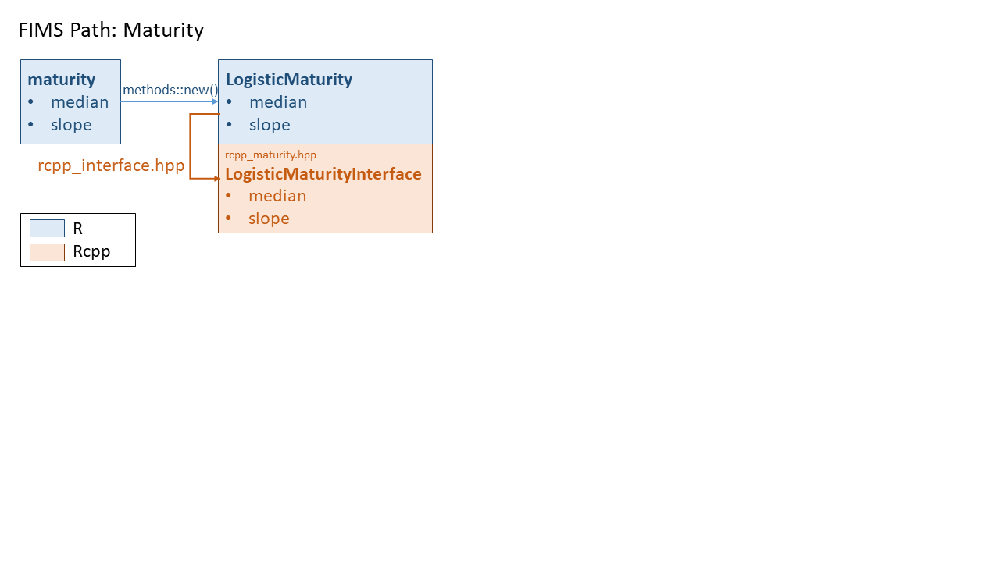

This vignette describes the hierarchical structure of FIMS by describing the linkages, or path, from R to C++ using maturity as an example. The vignette is tailored to developers or others interested in understanding the core of FIMS. With each example of R code that follows there are explanations of how that code is linked to the C++ code.
The following diagram represents the complete path from R to C++ for
the maturity module. The following sections break this diagram into
simplified parts using a common color coding, where R code is in blue,
code for the Rcpp interface that links R objects to C++ objects is in
orange, the C++ code that acts as the core of FIMS is in green, and the
C++ code that makes up Information is in grey.

Modules in R
FIMS is comprised of several modules that can be linked together to create a model. The maturity module is just one of them but will serve as the example in this vignette. Modules are written in C++ and linked to R using Rcpp. To retrieve a module from the C++ code it must be set up in R and then populated with parameters.
After loading FIMS and the default data set that comes with FIMS, a maturity module can be created using a list. It is easiest to populate this list using wrapper functions that are written in R. The list that specifies how the module will be created can be updated from the defaults using [dplyr::mutate()]. It is often easier to create the defaults and update them rather than creating the list by yourself because the wrapper functions will ensure the proper structure is used. That way you do not have to memorize what the structure is supposed to look like. Last, the list is used to create the module, using another wrapper function.
# Load the FIMS package
library(FIMS)
# Load a built-in data set from the FIMS package
data("data1")
# Convert the data into a FIMSFrame object, which is an S4 class.
# See ?FIMSFrame for more information.
fims_frame <- FIMSFrame(data1)
# Create default maturity parameters using internal function
default_parameters <- create_default_configurations(fims_frame) |>
tidyr::unnest(cols = data) |>
FIMS:::create_default_maturity(data = fims_frame)
show(default_parameters)
#> # A tibble: 2 × 13
#> model_family module_name module_type label distribution_link fleet_name age
#> <chr> <chr> <chr> <chr> <chr> <chr> <dbl>
#> 1 NA Maturity Logistic infle… NA NA NA
#> 2 NA Maturity Logistic slope NA NA NA
#> # ℹ 6 more variables: length <dbl>, time <int>, value <dbl>,
#> # estimation_type <chr>, distribution_type <chr>, distribution <chr>
# The default maturity parameters can be updated
parameters <- default_parameters |>
dplyr::rows_update(
tibble::tibble(
model_family = "catch_at_age",
module_name = "Maturity",
label = c("inflection_point", "slope"),
value = c(2.25, 3),
),
by = c("module_name", "label")
)
show(parameters)
#> # A tibble: 2 × 13
#> model_family module_name module_type label distribution_link fleet_name age
#> <chr> <chr> <chr> <chr> <chr> <chr> <dbl>
#> 1 catch_at_age Maturity Logistic infle… NA NA NA
#> 2 catch_at_age Maturity Logistic slope NA NA NA
#> # ℹ 6 more variables: length <dbl>, time <int>, value <dbl>,
#> # estimation_type <chr>, distribution_type <chr>, distribution <chr>
# Initialize maturity module based on the list of parameters
maturity <- FIMS:::initialize_maturity(
parameters = parameters,
data = fims_frame
)For power users, the methods package can be used to call Rcpp and create the module without using lists of parameters or any wrapper functions. The following code also creates the same maturity module.
# load FIMS
library(FIMS)
# Create a new maturity model
maturity <- methods::new(LogisticMaturity)
# Populate the maturity module with parameter values.
maturity$inflection_point[1]$value <- 10
maturity$inflection_point[1]$estimation_type$set("constant")
maturity$slope[1]$value <- 0.2
maturity$slope[1]$estimation_type$set("constant")To run a FIMS model, more modules than just a maturity module need to be linked to a population module. But, this example only includes a maturity module so the code below is just pseudo code showing how to link a maturity module to a population module. The code below assumes that growth and recruitment modules, i.e., modules 2 and 3, have already been set up.
# Initialize the population module and link the maturity module
# The IDs of the growth and recruitment modules are pseudo code and don't exist
population <- create_default_configurations(fims_frame) |>
tidyr::unnest(cols = data) |>
FIMS:::create_default_Population(data = fims_frame, log_rzero = log(1000000)) |>
dplyr::mutate(model_family = "catch_at_age") |>
dplyr::bind_rows(parameters) |>
FIMS:::initialize_population(
data = fims_frame,
linked_ids = setNames(
c(maturity$get_id(), 2, 3),
c("maturity", "growth", "recruitment")
)
)For power users, the methods package can be used to call Rcpp and create the population module without using lists of parameters or any wrapper functions.
population <- methods::new(Population)
population$SetMaturityID(maturity$get_id())
population$SetGrowthID(2)
population$SetRecruitmentID(3)Because FIMS sets up objects that are stored in memory simply running
rm(population) will not free this memory back up. Instead,
users need to use clear(), which is a function written in
the Rcpp interface but callable from R. Restarting or closing your R
session will also work to free up the memory.
Rcpp Interface
For each module, the Rcpp code in rcpp_interface.hpp
defines what fields the R user can see and set. Additional code for
methods, e.g., get_id, constructors, and destructors are
defined for each module in .hpp files found in the inst/include/interface/rcpp
directory. Only the fields and methods that are listed in the module
interface, see below, are exposed to the R user. Additionally, this
directory stores the code for Rcpp functions like
clear().
Rcpp::class_<LogisticMaturityInterface>("LogisticMaturity")
.constructor()
.field("inflection_point", &LogisticMaturityInterface::inflection_point)
.field("slope", &LogisticMaturityInterface::slope)
.method("get_id", &LogisticMaturityInterface::get_id)
.method("evaluate", &LogisticMaturityInterface::evaluate);The code above shows that there are two fields specific to the
maturity module (i.e., parameters), inflection_point and
slope, and methods (i.e., functions), get_id
and evaluate. get_id method returns a unique
ID for a created module. Where, you can have multiple instances of a
maturity module defined in memory but only one can be used per model.
Methods are functions that can be called from R. You can view all the
fields and methods that are exposed to the R user for any Rcpp class by
passing the quoted name inside the round brackets of any call to
Rcpp::class_<*>("") as an unquoted string to
methods::show(), e.g.,
methods::show(LogisticMaturity).
LogisticMaturity references the maturity rcpp class,
LogisticMaturityInterface defined in rcpp_maturity.hpp
in the directory inst/include/interface/rcpp/rcpp_objects.
This file consists of a MaturityInterfaceBase class and a
LogisticMaturityInterface class, with the former being the
parent class and the latter being the child
class. Sometimes there are multiple child classes under a
parent class but as of now, there is only one child class, i.e., option,
for maturity. It is the child classes which are referenced from R, the
parent classes are just used in Rcpp to set the structure.
class MaturityInterfaceBase : public FIMSRcppInterfaceBase {
public:
static uint32_t id_g; /**< static id of the maturity interface base */
uint32_t id; /**< id of the maturity interface base */
...
}
class LogisticMaturityInterface : public MaturityInterfaceBase {
public:
/**
* @brief The value of the dependent variable at which the response reaches
* 0.5.
*/
Parameter inflection_point;
/**
* @brief The width of the curve at the inflection_point.
*/
Parameter slope;
...
}
All Rcpp interface classes from FIMS define parameters (e.g.,
inflection_point, slope) using the
ParameterVector class defined in rcpp_interface_base.hpp
in the directory inst/include/interface/rcpp/rcpp_objects.
ParameterVectors allow parameters to vary with time. Whereas, the
Parameter class is only used for time-invariant parameters. The fields
for these classes that are accessible from R are defined in the rcpp_interface.hpp
file in the directory inst/include/interface/rcpp.
For example,
Rcpp::class_<Parameter>("Parameter")
.constructor()
.constructor<double>()
.constructor<Parameter>()
.field("value", &Parameter::value)
.field("min", &Parameter::min)
.field("max", &Parameter::max)
.field("estimation_type", &Parameter::estimation_type);Each field (i.e., parameter) from maturity (i.e., the
maturity module we defined in R) will therefore inherit the five fields
defined in the Parameter class: value, min,
max, estimation_type. That is, two parameter
fields and 10 fields within those parameters.
fims namespace
What is a namespace?
A namespace in C++ is similar to a library in R. The core of FIMS is
within the fims namespace and the namespace is a convenient
way to differentiate between the part of the C++ code base that is
portable, i.e., independent of statistical platform, and the part of the
codebase that depends on platforms outside of base C++ (e.g.,
Rcpp, R, TMB). Any code written
within:
is considered to be a part of the fims namespace. C++
classes written within the fims namespace can be accessed
within the C++ code base using fims_popdy::.
There are some exceptions where TMB specific code is
referenced within the fims namespace. In these cases, code
is written within an #ifdef TMB_MODEL wrapper, which means
the code is only defined if TMB is being used. Given the
addition of a new platform, e.g., stan, a new wrapper could be added to
define platform specific code for these sections.
For example, the definition of data types in inst/include/interface/interface.hpp will always be platform dependent because each platform has specific requirements for how the data types are defined. Whenever a new platform is added to FIMS, we will need to set up the platform specific data type definitions. Below is an example of a definition.
namespace fims {
#ifdef TMB_MODEL
/**
* @brief fims::ModelTraits class that contains the DataVector
* and ParameterVector types.
*/
template <typename Type>
struct fims::ModelTraits {
typedef typename CppAD::vector<Type> DataVector; /**< A vector
of the data that is differentiable */
typedef typename CppAD::vector<Type> ParameterVector; /**< A
vector of the parameters that is differentiable */
typedef typename tmbutils::vector<Type>
EigenVector; /**< A vector as defined in the Eigen namespace in TMB */
};
#endif /* TMB_MODEL */
} // namespace fims
//not developed yet
#ifdef STAN_MODEL
//stan specific definitions go here
#endifMaturity example
Each Rcpp interface object includes an add_to_fims_tmb()
function. There are two shared pointers set up within this function, one
to link each Rcpp interface object (e.g.,
LogisticMaturityInterface) to the Information
class in the fims namespace defined in inst/include/common/information.hpp
and one to link to the matching class in the fims
namespace. In our maturity example, this would be the
LogisticMaturity class in the fims namespace
defined in inst/include/population_dynamics/maturity/functors/logistic.hpp.
Within rcpp_maturity.hpp, there is a link to the
fims_info::Information class to register maturity
parameters and specify whether or not they are random effects. We do
this by setting up two pointers in the interface, info that points to
information, and maturity that points to the logistic maturity
module.
// file: rcpp_maturity.hpp
// info is a shared pointer that points to fims_info::Information
std::shared_ptr<fims_info::Information<TMB_FIMS_REAL_TYPE> > info =
fims_info::Information<TMB_FIMS_REAL_TYPE>::GetInstance();
if (this->inflection_point.estimation_type == "random_effects") {
/*
if inflection_point is a random effect,
the inflection_point value from LogisticMaturityInterface (maturity->inflection_point)
is passed to the Information member function RegisterRandomEffect
*/
info->RegisterRandomEffect(maturity->inflection_point);
}
if (this->inflection_point.estimation_type == "fixed_effects") {
/*
if inflection_point is estimated as a fixed_effect,
the inflection_point value from LogisticMaturityInterface (maturity->inflection_point)
is passed to the Information member function RegisterParameter
*/
info->RegisterParameter(maturity->inflection_point);
}Linking to the fims_popdy::LogisticMaturity class allows
the code to link the values input from R to the values used in the
estimation of parameters when fitting data to a model. Below is an
example of the link for maturity.
// file: rcpp_maturity.hpp
// maturity is a shared pointer that points to fims_popdy::LogisticMaturity
std::shared_ptr<fims_popdy::LogisticMaturity<TMB_FIMS_REAL_TYPE> > maturity =
std::make_shared<fims_popdy::LogisticMaturity<TMB_FIMS_REAL_TYPE> >();
// the inflection_point value from LogisticMaturity (maturity->inflection_point)
// equals the inflection_point value from LogisticMaturityInterface
// (this->inflection_point.value)
maturity->inflection_point = this->inflection_point.value;We can also link these two pointers together so that the fims_info::Information class links up with the fims_popdy::LogisticMaturity, but more details on this later.
// file: rcpp_maturity.hpp
// the maturity_models pointer from Information that matches the
// id of the fims_popdy::LogisticMaturity class is equal to the pointer
// to fims_popdy::LogisticMaturity
info->maturity_models[maturity->id] = maturity;The add_to_fims_tmb function repeats
add_to_fims_tmb_internal four times to track the estimated
value of each parameter along with their first, second, and third
derivatives.

fims_popdy::LogisticMaturity class
The LogisticMaturity class in the fims
namespace defined in inst/include/population_dynamics/maturity/functors/logistic.hpp
has an evaluate method (i.e., function) that takes an
input, x and returns the output from a logistic function
(defined in inst/include/common/fims_math.hpp)
using the class members inflection_point and
slope values. Other modules that use the logistic function
use the same function in fims_math.hpp, e.g., logistic selectivity, and
thus, the logistic equation is only defined once within the source code
but used for multiple modules.
namespace fims_popdy {
/**
* @brief LogisticMaturity class that returns the logistic function value
* from fims_math.
*/
template <typename Type>
struct LogisticMaturity : public MaturityBase<Type> {
Type inflection_point; /**< 50 percent quantile of the value of the quantity of interest (x); e.g.,
age at which 50 percent of the fish are mature */
Type slope; /**<scalar multiplier of difference between quantity of interest
value (x) and inflection_point */
LogisticMaturity() : MaturityBase<Type>() {}
/**
* @brief Method of the logistic maturity class that implements the
* logistic function from FIMS math.
*
* @param x The independent variable in the logistic function (e.g., age or
* size at maturity).
*/
virtual const Type evaluate(const Type& x) {
return fims_math::logistic<Type>(inflection_point, slope, x);
}
};
} // namespace fims
Population class
The Population class defined in inst/include/population_dynamics/population/population.hpp
is where all the biological calculations happen, producing expected
values used in likelihood equations and derived quantities that are
important for management (e.g., spawning biomass). A shared pointer that
links the maturity module to population must be set up before the model
can evaluate maturity within the Population class.
// file: inst/include/population_dynamics/population/population.hpp
// maturity is a shared pointer to MaturityBase
// id of the maturity model object
int maturity_id = -999;
// shared pointer to the maturity module
std::shared_ptr<fims_popdy::MaturityBase<Type>> maturity;The maturity_id was set from R using the
SetMaturity() method from the
PopulationInterface class, which as a reminder is done
internally within FIMS::initialize_population but can also
be done by hand with SetMaturity. Where both options are
shown, again, below.
# Helper function
population <- create_default_configurations(fims_frame) |>
tidyr::unnest(cols = data) |>
FIMS:::create_default_Population(data = fims_frame, log_rzero = log(1000000)) |>
dplyr::mutate(model_family = "catch_at_age") |>
dplyr::bind_rows(parameters) |>
FIMS:::initialize_population(
data = fims_frame,
linked_ids = setNames(
c(maturity$get_id(), 2, 3),
c("maturity", "growth", "recruitment")
)
)
# Manual
population$SetMaturity(maturity$get_id())Notice above that population by default declares a pointer of type
MaturityBase (parent class), not the specific maturity
class we are using in this example, i.e., LogisticMaturity
(child class). MaturityBase has an evaluate
method with input arguments that match the inputs of each child
class:
// file: inst/include/population_dynamics/maturity/functors/maturity_base.hpp
namespace fims_popdy {
/**
* @brief Base class for all maturity functors.
* @tparam TypeThe type of the maturity functor.
*/
template <typename Type>
struct MaturityBase : public fims_model_object::FIMSObject<Type> {
// id_g is the ID of the instance of the MaturityBase class.
// this is like a memory tracker.
// Assigning each one its own ID is a way to keep track of
// all the instances of the MaturityBase class.
static uint32_t id_g; /**< The ID of the instance of the MaturityBase class */
/**
* @brief Constructor
*/
MaturityBase() {
// increment id of the singleton maturity class
this->id = MaturityBase::id_g++;
}
/**
* @brief Calculates the maturity.
* @param x The independent variable in the maturity function (e.g., logistic
* maturity at age or size).
*/
virtual const Type evaluate(const Type& x) = 0;
};
}The evaluate function is a virtual C++
function, which means the function can be overwritten by functions
of the same name from a child class. This structure keeps the maturity
module in population generic. We don’t need any conditional statements
to loop over all possible maturity formulations within population. We
only need to add a new child maturity class with an Rcpp interface and
we can automatically call it from population. There is a trade-off here.
We are creating a nested hierarchical structure that makes the code base
harder to read. In exchange, we’re creating code with a lower cyclomatic
complexity, that is, there will only ever be one independent path
from the user to the maturity->evaluate() call in
population, regardless of how many maturity functions are added to FIMS.
Code with lower cyclomatic complexity is easier to test, maintain, and
extend.
Once we have set up the shared pointer, we can access maturity from within population.
// file: inst/include/population_dynamics/population/population.hpp
/**
* @brief Calculates expected proportion of individuals mature at a selected
* age.
*
* @param i_age_year dimension folded index for age and year
* @param age the age of maturity
*/
void CalculateMaturityAA(size_t i_age_year, size_t age) {
// this->maturity is pointing to the maturity module, which has
// an evaluate function. -> can be nested.
this->proportion_mature_at_age[i_age_year] =
this->maturity->evaluate(ages[age]);
}
Overview
The above material demonstrates how values passed in from R are
propagated into population.hpp, where they are used in biologically
relevant calculations. This, however, relies on population referencing
the correct child class (e.g., LogisticMaturity) even
though it only calls the parent class (MaturityBase). We
defined the maturity_id in population for the specific
logistic maturity module we wanted to use,
population$SetMaturity(maturity$get_id()), but we still
need to connect this ID with the actual module in memory.
This information is managed in FIMS through the
Information class in inst/include/common/information.hpp.
The Information class sets up a number of C++ maps (a
container with a key value and mapped value - think of named lists in R)
where the key is the unique ID to the module and the mapped value is a
shared pointer to the module. C++ std::maps have an
iterator member for stepping through the elements of the map. This
iterator is also declared in the Information class so that we can loop
through all the unique maturity modules being called in FIMS. We
currently only have one but if FIMS is ever extended to include multiple
populations, we could have a unique maturity module for each population
or subset of populations.
// file: inst/include/common/information.hpp
// uint32_t is an unsigned integer (always positive)
// The first component of the map is a uint32_t which will be used to hold the
// ID. The second component of the map is the shared pointer, maturity_models,
// that points to fims_popdy::MaturityBase
// hash map to link each object to its shared location in memory
std::map<uint32_t, std::shared_ptr<fims_popdy::MaturityBase<Type> > >
maturity_models;
// Next we set up the iterator, which will be used to loop over all
// defined maturity modules
typedef typename std::map<uint32_t,
std::shared_ptr<fims_popdy::MaturityBase<Type> > >::iterator
maturity_models_iterator;
Next, let’s revisit the line of code that was written in the Rcpp
LogisticMaturityInterface class in inst/include/interface/rcpp/rcpp_objects/rcpp_maturity.hpp.
Here, we are setting the maturity_models pointer in
Information to equal the maturity pointer to
the LogisticMaturity module.
// file: rcpp_maturity.hpp
// the maturity_models pointer from Information that matches the id of the
// fims_popdy::LogisticMaturity class is equal to the pointer to
// fims_popdy::LogisticMaturity
info->maturity_models[maturity->id] = maturity;
Now we need to pass this pointer to the maturity pointer in
population so that population->maturity points to the
LogisticMaturity module instead of
MaturityBase. First we set up a map in
Information that points to Population.
// file: inst/include/common/information.hpp
// hash map to link each object to its shared location in
memory
std::map<uint32_t, std::shared_ptr<fims_popdy::Population<Type> > > populations;
typedef typename std::map<uint32_t,
std::shared_ptr<fims_popdy::Population<Type> > >::iterator
population_iterator;
// iterator for population objects
Populations are looped through with a new shared pointer,
p, to reference the individual population of interest.
// file: inst/include/common/information.hpp
for (population_iterator it = this->populations.begin();
it != this->populations.end(); ++it) {
std::shared_ptr<fims_popdy::Population<Type> > p = (*it).second;
...
}In this code chunk, (*it) refers to a single population
in the populations map. The second element of the map is
the pointer, so p = (*it).second means the pointer is being
set to a single population to equal the pointer to
populations in the map.
Within this population loop, the maturity pointer in
population is linked to the maturity pointer
in information, passing on the information that we want to use the
LogisticMaturity class.
// file: inst/include/common/information.hpp
// set maturity
if (p->maturity_id != -999) {
uint32_t maturity_uint = static_cast<uint32_t>(p->maturity_id);
maturity_models_iterator it = this->maturity_models.find(maturity_uint);
// >maturity_models is specified in
// information.hpp and used in rcpp
if (it != this->maturity_models.end()) {
// p->maturity is the maturity pointer in population
// (*it).second is the maturity pointer in information
p->maturity = (*it).second; // >maturity defined in population.hpp
}
}Here, (*it) is referring to the maturity_models map in
information and (*it).second refers to the second element of the map,
which is the pointer to the maturity module.
Thinking in R
This is an optional exercise for those who would benefit from reviewing what is happening when the Rcpp code is being accessed from within R and how to translate some of the C++ code into similar R code. Below, the first section of code will be how to think about a concept in R and the second section will be how to use Rcpp in R or how to think about the C++ code in R terms. These latter sections, will be commented out to help distinguish between the two code sets. The idea is to link what is happening in the C++ code of FIMS to a language that some are more familiar with, i.e., R.
Of the three populations included in the example, the first two have a mirrored logistic maturity function and the third has a different maturity function. This third function could be a different function all together or a logistic function with a different parameter set. For this example, there the third maturity function is a logistic function with a different parameter set. Note that additional modules should be included in population, e.g., growth, but that will be ignored for this example.
population_modules <- list(
"Pop 1" = list(
id = 1,
maturity = "MaturityBase"
),
"Pop 2" = list(
id = 2,
maturity = "MaturityBase"
),
"Pop 3" = list(
id = 3,
maturity = "MaturityBase"
)
)
maturity_modules <- list(
"Logistic Maturity" = list(id = 1, inflection_point = 10, slope = 0.2),
"Some Other Maturity" = list(id = 2, inflection_point = 8, slope = 0.3)
)population_modules and maturity_modules are
the equivalent of instantiated C++ classes stored in memory. This R code
chunk above is comparable to using Rcpp in R to set up the modules and
store them in memory.
# maturity1 <- methods::new(LogisticMaturity)
# maturity1$inflection_point$value <- 10
# maturity1$slope$value <- 0.2
# maturity2 <- methods::new(LogisticMaturity)
# maturity2$inflection_point$value <- 8
# maturity2$slope$value <- 0.3
# population1 <- methods::new(Population)
# population2 <- methods::new(Population)
# population3 <- methods::new(Population)Next, the maturity IDS are assigned to each maturity_id
in one of the three populations. Which is actually done using
SetMaturity in R (i.e., the commented out code).
population_modules[[1]]$maturity_id <- maturity_modules[[1]]$id
population_modules[[2]]$maturity_id <- maturity_modules[[1]]$id
population_modules[[3]]$maturity_id <- maturity_modules[[2]]$id
# population1$SetMaturity(maturity1$get_id())
# population2$SetMaturity(maturity1$get_id())
# population3$SetMaturity(maturity2$get_id())In FIMS, the Information class has the objects, population and maturity, which are C++ maps. The first element of the map is the ID, the second element of the map is the pointer to the Population or Maturity class. This can be thought about in R using a list but in C++ maps are used.
information <- list(
populations = list(id = NULL, pointer = "Population"),
maturity = list(id = NULL, pointer = "MaturityBase")
)
# std::map<uint32_t, std::shared_ptr<fims_popdy::MaturityBase<Type> > > maturity_models;
# std::map<uint32_t, std::shared_ptr<fims_popdy::Population<Type> > > populations;Pointers are used to link Information to each respective module.
information$populations[[1]] <- list(id = 1, pointer = population_modules[[1]])
information$populations[[2]] <- list(id = 2, pointer = population_modules[[2]])
information$populations[[3]] <- list(id = 3, pointer = population_modules[[3]])
information$maturity[[1]] <- list(id = 1, pointer = maturity_modules[[1]])
information$maturity[[2]] <- list(id = 2, pointer = maturity_modules[[2]])In FIMS, these definitions happen by passing information from the
rcpp interface into FIMS Information in rcpp_maturity.hpp, where
info in the pointer to information and
maturity is the pointer to a specific maturity module.
## // (e.g., maturity = maturity_modules[[1]])
# info->maturity_models[maturity->id] = maturity;Each population module that is defined in information
must be looped through to set the maturity defined in the user-specified
Rcpp interface back out to the Population class used to run all the
calculations in the model.
for (it in 1:length(population_modules)) {
# for (population_iterator it = this->populations.begin();
# it != this->populations.end(); ++it) {
p <- information$populations[[it]][2]
# std::shared_ptr<fims_popdy::Population<Type> > p = (*it).second;
maturity_uint <- p$pointer$maturity_id
# uint32_t maturity_uint = static_cast<uint32_t>(p->maturity_id);
newit <- which(
sapply(information$maturity, function(x) x$id) == maturity_uint
)
# maturity_models_iterator it = this->maturity_models.find(maturity_uint)
p$pointer$maturity # MaturityBase
p$pointer$maturity <- information$maturity[[newit]][[2]]
p$pointer$maturity # LogisticMaturity1
# p->maturity = (*it).second;
population_modules[[it]][2]$maturity <- p$pointer$maturity
}
sapply(population_modules, function(x) x[2]$maturity)
#> Pop 1 Pop 2 Pop 3
#> id 1 1 2
#> inflection_point 10 10 8
#> slope 0.2 0.2 0.3In R, the above code sets up an intermediate value, p.
Once maturity from p is updated to equal the correct maturity module,
p$pointer$maturity <- information$maturity[[newit]][[2]],
the above code passes this back to population_modules,
population_modules[[it]][2]$maturity <- p$pointer$maturity.
In this context, population_modules is the population class
held in memory that is being used to run calculations.
The deeper level of abstraction happening in C++ is that in FIMS,
p is the population module stored in memory. An equivalent line
of code to
population_modules[[it]][2]$maturity <- p$pointer$maturity
isn’t needed in FIMS because when we update p, we are also updating the
population class held in memory that is being used to run
calculations.